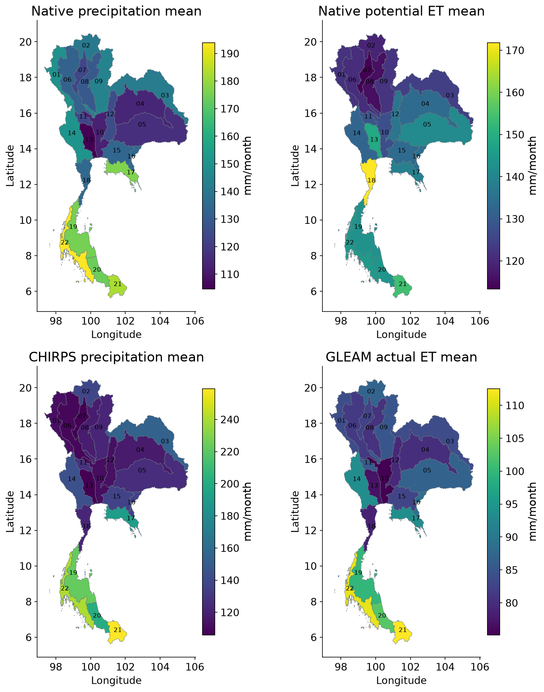
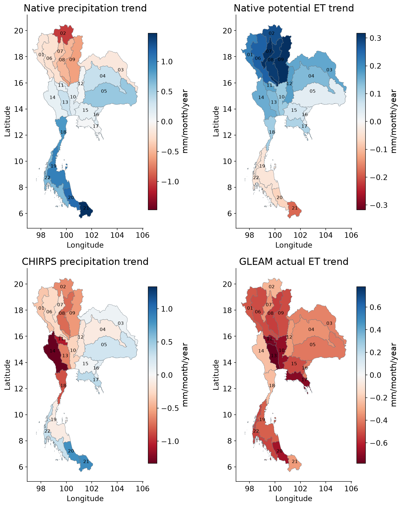
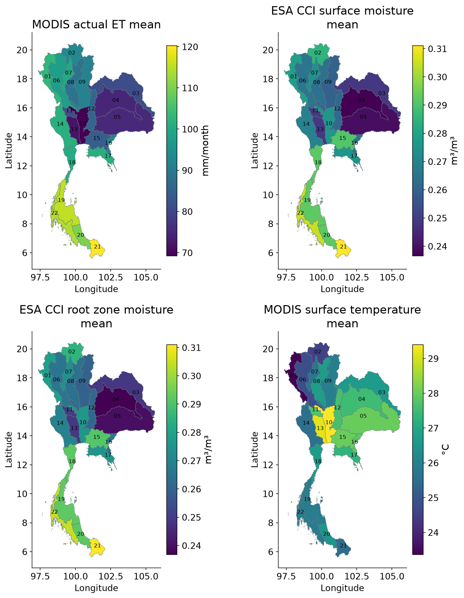
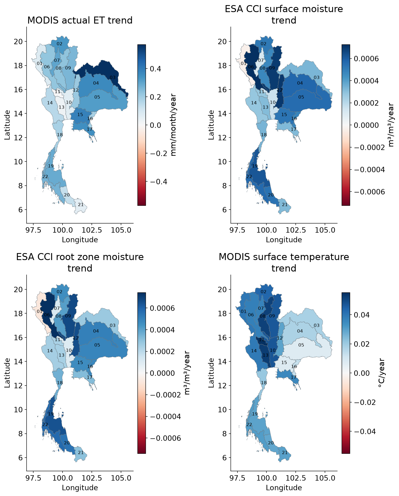
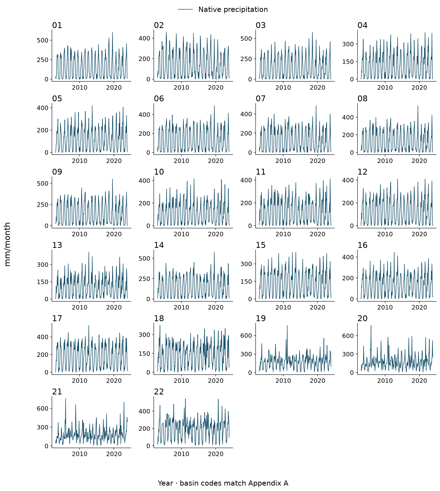
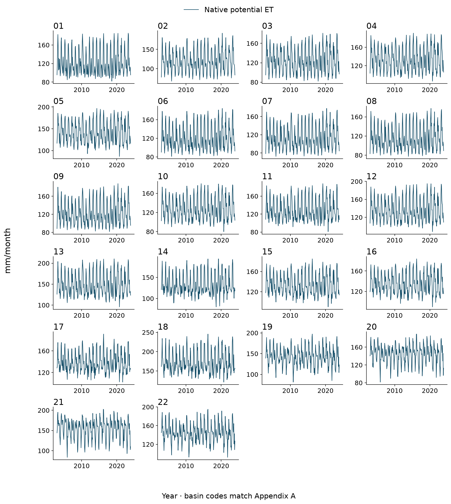
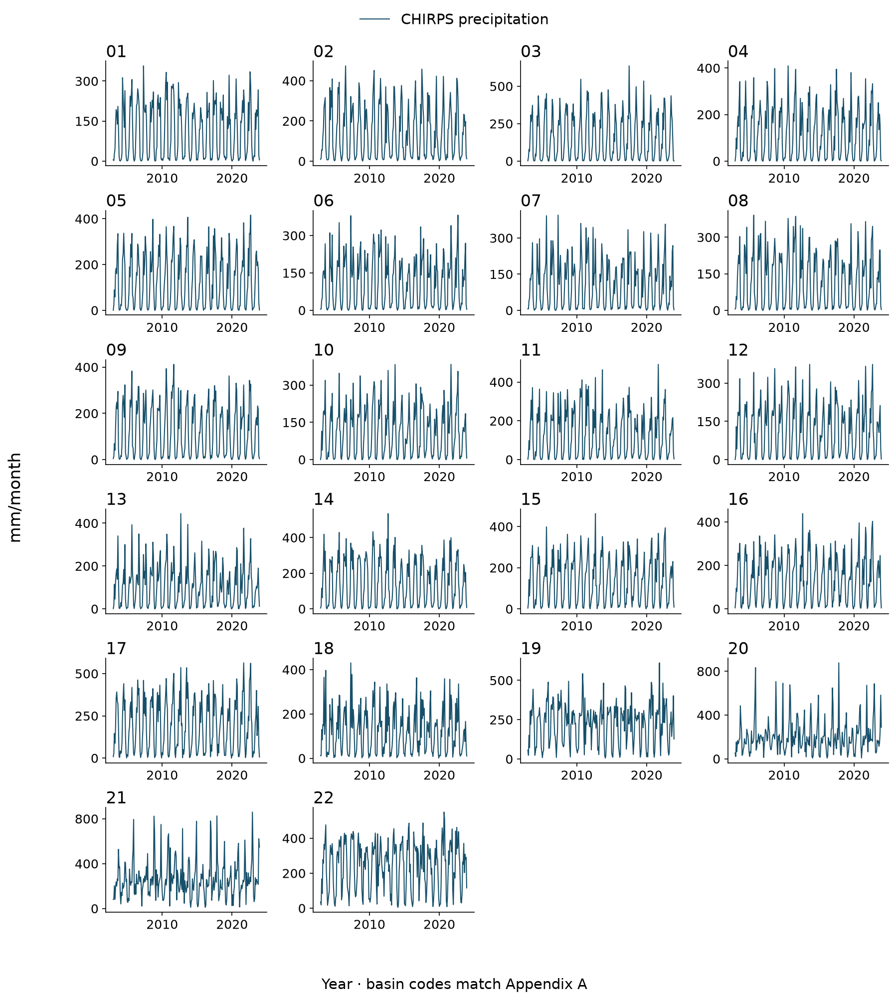
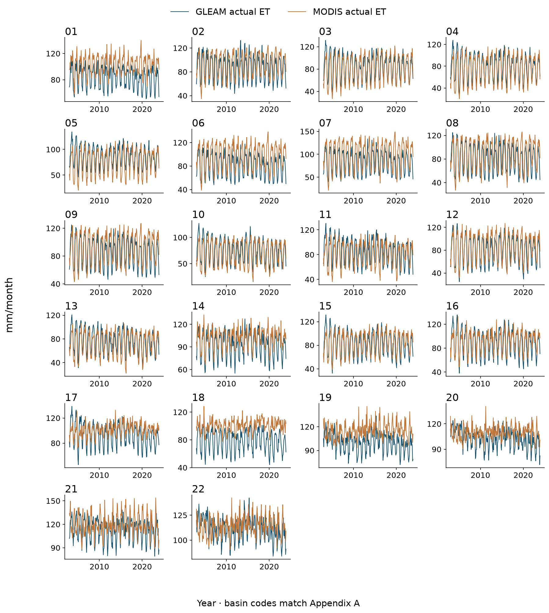
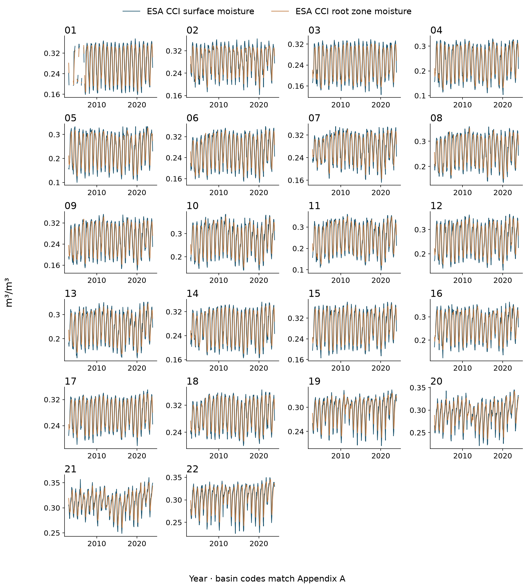
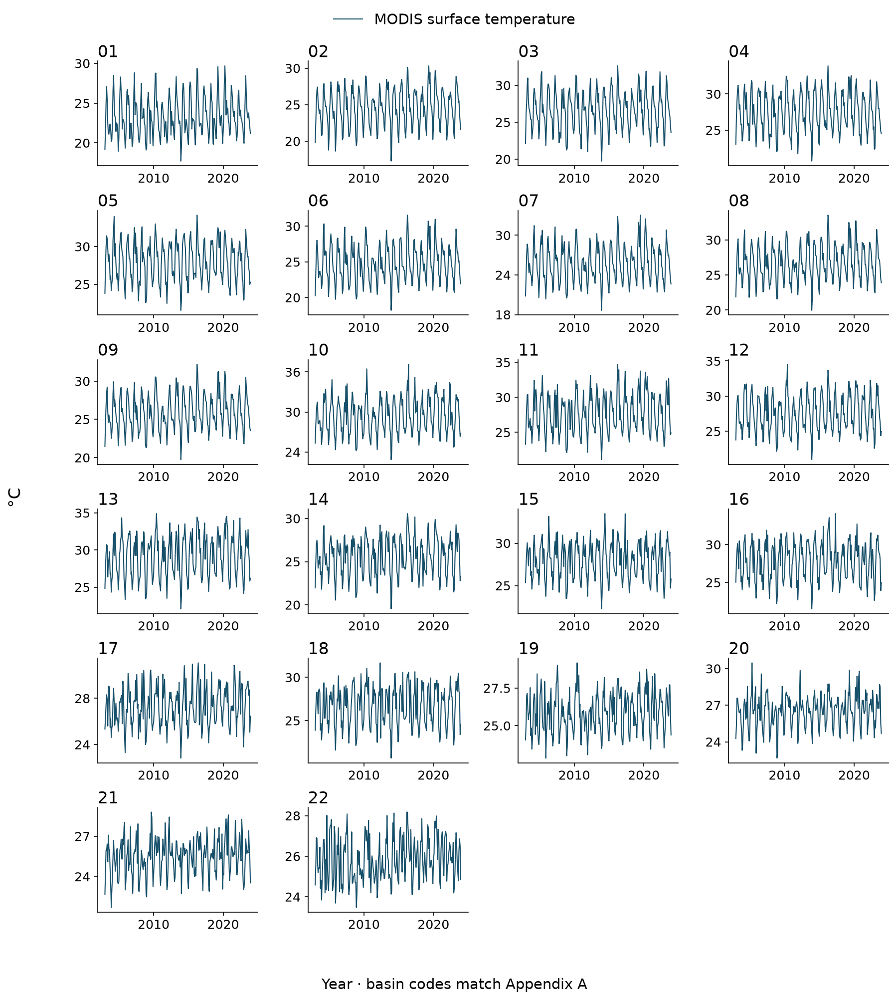

Basin performance and climate forcing
All 22 Thai basins: 11 value tables and 10 spatial and temporal figure sets. Appendices C and D of the report explain each comparison.
Native precipitation and potential ET drive the climate reconstruction. CHIRPS tests alternative rainfall. Actual ET, soil moisture and surface temperature provide supporting context. They are not additional primary-model predictors.
Tables for all basins
- Table C.1 Observed storage trends for every basin
Slopes are seasonal Sen estimates in mm/year. q is seasonal Mann–Kendall FDR across basins; n is observed months. Full intervals and original p-values remain in CSR_basin_trends.csv. Basin names are listed in Appendix A.
- Table C.2 TWSA climate reconstruction performance
Frozen ensemble, 2016–2023 test data. Target: naturalized WaterGAP, not GRACE. Errors are mm; anomaly NSE removes the training monthly climatology. Higher NSE and lower errors are better.
- Table C.3 GWSA climate reconstruction performance
Frozen ensemble, 2016–2023 test data. Target: naturalized WaterGAP, not GRACE. Errors are mm; anomaly NSE removes the training monthly climatology. Higher NSE and lower errors are better.
- Table C.4 TWSA additive trends and residual components
Calendar-month fixed-effect OLS slopes, mm/year, on common available months. O observed; C naturalized; H historical minus naturalized; R observed minus naturalized; E observed minus historical. R = H + E. These are not additive Sen slopes or measured pumping rates. Conditional intervals are supplied in attribution_wild_block_intervals.csv.
- Table C.5 GWSA additive trends and residual components
Calendar-month fixed-effect OLS slopes, mm/year, on common available months. O observed; C naturalized; H historical minus naturalized; R observed minus naturalized; E observed minus historical. R = H + E. These are not additive Sen slopes or measured pumping rates. Conditional intervals are supplied in attribution_wild_block_intervals.csv.
- Table C.6 GLDAS matched land storage performance
Soil, canopy and snow only; naturalized WaterGAP compared with GLDAS Noah on matched months. Errors are mm; bias = WaterGAP minus GLDAS. This does not validate full TWS, GWS or human-only storage.
- Table C.7 Residual agreement with annual groundwater head
Longest-overlap retained-flags panel. Positive r means lower residual tends to occur with lower head. Detr r removes a linear trend. An em dash means unavailable evidence, not zero. Head is not converted into storage; no cross-unit NSE or RMSE is reported. Other station panels and conditional intervals remain in the complete CSV.
- Table C.8 TWS residual agreement with independent reservoir storage
Scene-screened Level 1 estimates; fixed pre-2004 reservoir panel. Adjusted correlation removes season and trend. Intervals resample whole calendar years. Missing or insufficient evidence is left unavailable. This checks a surface-water component, not a human-only total.
- Table C.9 Rainfall source sensitivity in the controlled Ridge model
Test-period anomaly NSE for the frozen Weather_memory Ridge experiment, holding PET and the native-forced parent target fixed. CHIRPS is unadjusted here. This is forcing sensitivity, not evidence that one rainfall product is more accurate. It is a different experiment from the ensemble in Tables C.2–C.3.
- Table C.10 Basin mean forcing and supporting data 1
Available-month means within January 2003–December 2023. Rainfall and ET are mm/month; moisture is m³/m³; temperature is °C. Means are not annual totals. Coverage and sample counts differ between products and are supplied in forcing_summary_and_trends.csv. Actual ET, moisture and temperature are supporting context, not added climate-model predictors.
- Table C.11 Basin mean forcing and supporting data 2
Available-month means within January 2003–December 2023. Rainfall and ET are mm/month; moisture is m³/m³; temperature is °C. Means are not annual totals. Coverage and sample counts differ between products and are supplied in forcing_summary_and_trends.csv. Actual ET, moisture and temperature are supporting context, not added climate-model predictors.
Product means, trends, sample counts and dates · Monthly forcing and context values
Spatial and temporal figures
Figure D.1 Mean forcing and supporting data 1
Vector PDF
Available-month means within 2003–2023; values describe basin averages, not native pixel trends. Native precipitation and PET drive the climate reconstruction; CHIRPS is alternative rainfall. Actual ET, soil moisture and surface temperature provide context. Unequal product coverage is retained; no significance or causal attribution is implied.
Figure D.2 Trend in forcing and supporting data 1
Vector PDF
OLS slopes with calendar-month effects within 2003–2023; values describe basin averages, not native pixel trends. Native precipitation and PET drive the climate reconstruction; CHIRPS is alternative rainfall. Actual ET, soil moisture and surface temperature provide context. Unequal product coverage is retained; no significance or causal attribution is implied.
Figure D.3 Mean forcing and supporting data 2
Vector PDF
Available-month means within 2003–2023; values describe basin averages, not native pixel trends. Native precipitation and PET drive the climate reconstruction; CHIRPS is alternative rainfall. Actual ET, soil moisture and surface temperature provide context. Unequal product coverage is retained; no significance or causal attribution is implied.
Figure D.4 Trend in forcing and supporting data 2
Vector PDF
OLS slopes with calendar-month effects within 2003–2023; values describe basin averages, not native pixel trends. Native precipitation and PET drive the climate reconstruction; CHIRPS is alternative rainfall. Actual ET, soil moisture and surface temperature provide context. Unequal product coverage is retained; no significance or causal attribution is implied.
Figure D.5 Native precipitation for all basins
Vector PDF
Monthly basin means during 2003–2023, in the stated physical units. Every basin is shown; unavailable months remain gaps. These are actual meteorological climate-model inputs.
Figure D.6 Native potential ET for all basins
Vector PDF
Monthly basin means during 2003–2023, in the stated physical units. Every basin is shown; unavailable months remain gaps. These are actual meteorological climate-model inputs.
Figure D.7 CHIRPS precipitation for all basins
Vector PDF
Monthly basin means during 2003–2023, in the stated physical units. Every basin is shown; unavailable months remain gaps. CHIRPS is used as alternative rainfall in the forcing test.
Figure D.8 GLEAM actual ET and MODIS actual ET for all basins
Vector PDF
Monthly basin means during 2003–2023, in the stated physical units. Every basin is shown; unavailable months remain gaps. These datasets provide supporting context; they are not additional predictors in the primary climate reconstruction.
Figure D.9 ESA CCI surface moisture and ESA CCI root zone moisture for all basins
Vector PDF
Monthly basin means during 2003–2023, in the stated physical units. Every basin is shown; unavailable months remain gaps. These datasets provide supporting context; they are not additional predictors in the primary climate reconstruction.
Figure D.10 MODIS surface temperature for all basins
Vector PDF
Monthly basin means during 2003–2023, in the stated physical units. Every basin is shown; unavailable months remain gaps. These datasets provide supporting context; they are not additional predictors in the primary climate reconstruction.